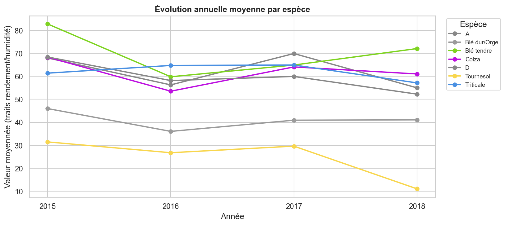

Résumé exécutif
Ce projet transforme six sources agronomiques en une table analytique traçable et en livrables utilisables par la R&D. Le pipeline local orchestre 17 phases d’ingestion, de qualité, d’analyse et de restitution en 177,7 secondes. Il contrôle 326 688 lignes brutes cumulées et produit 136 358 mesures reliées à 2 116 essais et 28 697 matériels. PySpark, R et scikit-learn sont réellement exécutés ; les composants Sqoop, NiFi, Kafka, HBase, Hive et Drill sont des adaptations fonctionnelles locales explicitement identifiées. Le modèle de rendement améliore la MAE de la baseline de 28,8 %, mais son R² de 0,4548 impose une interprétation prudente. Trente-deux lignes sont mises en quarantaine sans altérer les sources. Les codes espèces A, D et F, la variable MT_DAT et une valeur extrême de rendement restent documentés comme limites de qualité. Le prototype est reproductible et démontrable, mais nécessite validation agronomique et infrastructure distribuée avant toute utilisation opérationnelle.
Informations publiques
Auteur : Salaheddine Abbar
Année : 2026
Version : 1.2 — version de soutenance
Mise à jour : 10 août 2026
Établissement, formation et encadrant ne sont pas affichés car ils n’ont pas été fournis et ne doivent pas être inventés.
Historique des versions
| Version | Date | Modification |
|---|---|---|
| 1.0 | 31/07/2026 | Première version |
| 1.1 | 09/08/2026 | Refonte UX et documentation |
| 1.2 | 10/08/2026 | Validation scientifique, accessibilité et carte filtrable |
Contexte et objectifs
Le projet consolide des données d’essais agronomiques, de matériels et de mesures afin de produire une table analytique, des contrôles qualité, des indicateurs, des visualisations et un modèle exploratoire de rendement. L’objectif est double : démontrer une chaîne reproductible en 17 phases et documenter honnêtement ce qui a été réellement exécuté.
Ingestion
Réunir des fichiers hétérogènes sans modifier les sources.
Analyse
Produire des agrégats et modèles avec une séparation temporelle stricte.
Traçabilité
Conserver rapports JSON, sorties CSV/Parquet et journaux d’exécution.
Sources et dictionnaire des données
Les sources couvrent les essais, résultats, matériels, parcelles, espèces et qualifications. Les contrôles portent sur 326 688 lignes brutes cumulées. La table de faits finale contient 136 358 mesures liées à 2 116 essais et 28 697 matériels distincts.
| Source | Lignes contrôlées | Rôle |
|---|---|---|
| Essais | 492 | Métadonnées expérimentales |
| Résultats | 136 358 | Mesures de traits |
| Matériels | 112 886 | Identité et taxonomie |
| Parcelles | 74 805 | Lien essai–matériel |
| Espèces | 10 | Référentiel de libellés |
| Qualifications | 2 137 | Informations complémentaires |
Variables analytiques principales
| Variable | Type | Description | Unité | Données manquantes |
|---|---|---|---|---|
ESPECE_FR | Texte | Catégorie agronomique | — | 0 % dans la table Spark |
REGION | Texte | Région déclarée | — | 82,64 % dans le sous-ensemble ML |
YD15QH | Nombre | Rendement standardisé à 15 % d’humidité | q/ha | Filtré par trait avant modélisation |
YEAR | Entier | Année de l’essai | année | 0 % dans le sous-ensemble ML |
TRAIT | Texte | Code de la mesure | selon le trait | 0 % dans les résultats requis |
RESULT_NUM | Nombre | Valeur numérique normalisée | selon le trait | 0 % dans la table Spark |
Architectures actuelle et cible
Prototype local réellement exécuté
Le point d’entrée main.py orchestre les phases, mesure leur durée, écrit des points de reprise et produit les livrables. Les formats CSV servent à l’inspection, Parquet au stockage analytique et JSON à la preuve d’exécution.
Cible distribuée envisagée
Cette seconde chaîne est une cible d’industrialisation. Elle n’est pas présentée comme déployée dans le prototype.
Description des 17 phases
| Phase | Fonction | Implémentation réelle | Durée |
|---|---|---|---|
| 1 · Sqoop | Import structuré | Adaptation Python locale | 3,2 s |
| 2 · Profilage | Schémas, types et anomalies | Python | 4,2 s |
| 3 · NiFi | Provenance des flux | Adaptation locale | 6,5 s |
| 4 · ETL | Jointures et normalisation | Python | 5,3 s |
| 5 · HBase | Stockage orienté colonnes | SQLite local | 61,6 s |
| 6 · Kafka | Traitement en flux | File locale | 34,0 s |
| 7 · Hive | Requêtes analytiques | DuckDB | 0,4 s |
| 8 · Spark | Agrégats distribuables | PySpark 3.5.5 local[*] | 21,8 s |
| 9 · Drill | Requêtes multi-format | DuckDB | 0,2 s |
| 10 · Analyse | Statistiques descriptives | Python | 3,5 s |
| 11 · Visualisation | Huit graphiques | Python | 7,8 s |
| 12 · Prédiction | Régression et classification | scikit-learn | 20,6 s |
| 13 · Catalogue | Index de recherche | Local | 2,5 s |
| 14 · R | ANOVA et statistiques | R 4.6.1 | 4,2 s |
| 15 · Qualité | Règles et quarantaine | Python | 1,3 s |
| 16 · Livrables | Contrôle des sorties | Python | 0,5 s |
| 17 · Dashboard | Restitution | HTML/CSS/JavaScript | 0,1 s |
Durée totale : 177,7 secondes, soit 2 minutes 57,7 secondes.
Nettoyage, quarantaine et anomalies
Les sources restent immuables. Les lignes invalides sont isolées plutôt que supprimées silencieusement ; les doublons sont signalés. Sur 326 688 lignes contrôlées, 32 ont été placées en quarantaine et aucun doublon intégral n’a été détecté.
Détail des 32 lignes
| Anomalie | Lignes | Règle |
|---|---|---|
| Valeur obligatoire manquante | 10 | Colonne requise vide |
| Valeur numérique invalide | 22 | Valeur hors contrat dans les résultats |
| Source | Lignes isolées |
|---|---|
| Essais | 1 |
| Résultats | 23 |
| Matériels | 2 |
| Parcelles | 1 |
| Espèces | 1 |
| Qualifications | 4 |
Chaque ligne isolée conserve sa source et la règle déclenchée dans data/quarantine/. Les fichiers originaux ne sont jamais modifiés.
Codes A, D et F
Ces codes proviennent de la colonne espèce des sources. Ils représentent respectivement 7 435, 8 622 et 1 094 mesures. Aucun libellé n’est confirmé par le référentiel disponible ; ils restent donc affichés sous INCONNU_CODE_A, INCONNU_CODE_D et INCONNU_CODE_F. La résolution future exige une table de correspondance validée par le propriétaire métier.
MT_DAT
Pour INCONNU_CODE_A, des valeurs autour de 42 231 à 43 325 coexistent avec des valeurs d’échelle agronomique proches de 6,8 dans d’autres catégories. Cette plage correspond vraisemblablement à des numéros de série de dates Excel, sans que le sens métier puisse être confirmé. La variable est conservée dans les preuves, signalée comme non homogène et exclue du modèle. La correction future devra parser les formats source après validation du dictionnaire métier.
Valeur extrême YD15QH = 843,94
Cette valeur apparaît dans la catégorie colza, alors que son troisième quartile est 83,82. Elle est considérée comme extrême, mais ne peut pas être déclarée erronée sans retour métier. Elle reste donc visible dans les statistiques et preuves, tandis que l’entraînement applique la règle documentée 0 ≤ YD15QH ≤ 250.
Adaptations fonctionnelles locales
Sqoop, NiFi, HDFS, HBase, Kafka, Hive et Drill sont représentés par du code Python, des fichiers Parquet, SQLite, une file locale et DuckDB. Aucun service distribué correspondant n’est revendiqué comme installé.
Le résumé « HBase local » totalise 72 116 lignes : 2 116 essais, un lot plafonné à 50 000 résultats et 20 000 matériels. Les 136 358 mesures correspondent, elles, à la table de faits analytique complète. Les deux chiffres mesurent donc des périmètres différents.
Méthodologie de modélisation
Régression : prédire la valeur de YD15QH. Classification : prédire si YD15QH ≥ 80 q/ha. Ce seuil opérationnel provisoire doit être validé par un expert agronome avant tout usage métier.
| Ensemble | Années | Observations |
|---|---|---|
| Entraînement | 2015–2017 | 42 940 |
| Test temporel final | 2018 | 12 306 |
Les groupes d’essais sont isolés, sans chevauchement entre entraînement et test. La recherche d’hyperparamètres utilise GroupKFold, puis le test 2018 reste intact.
Variables utilisées
- Année
- Numéro de répétition
- Numéro d’entrée
- Catégorie d’espèce
- Spécificité
- Région
Variables et valeurs exclues
- Cible et variables dérivées de la cible
%MOISetYD16QH- Identifiants
SL_TRIAL, stock et nom matériel MT_DATnon normalisée- Valeurs YD15QH hors de 0–250
Résultats détaillés
Régression comparée à la baseline
| Modèle | MAE | RMSE |
|---|---|---|
| Baseline moyenne | 18,6639 | 22,9662 |
| Modèle final | 13,2904 | 16,9167 |
| Amélioration | 28,8 % | 26,3 % |
Le R² est de 0,4548 : le modèle explique environ 45 % de la variabilité et reste exploratoire.
Matrice de confusion — test 2018
| Prédit négatif | Prédit positif | |
|---|---|---|
| Réel négatif | 4 401 | 2 534 |
| Réel positif | 480 | 4 891 |
Exactitude 0,7551 ; précision 0,6587 ; rappel 0,9106 ; F1 0,7645.
Performances par catégorie codée
| Code | Observations | Précision | Rappel | F1 |
|---|---|---|---|---|
| A | 913 | 0,1895 | 1,0000 | 0,3186 |
| B | 1 583 | 0,0000 | 0,0000 | 0,0000 |
| D | 1 161 | 0,1484 | 0,2468 | 0,1854 |
| O | 2 254 | 0,2281 | 0,3238 | 0,2677 |
| T | 1 104 | 0,4532 | 0,6129 | 0,5211 |
| W | 5 291 | 0,8178 | 1,0000 | 0,8998 |
Les écarts entre catégories confirment que la performance globale masque des faiblesses importantes sur les catégories rares. Aucune décision automatique ne doit reposer sur ce modèle.

Tests et contrôles réalisés
| Test | Résultat |
|---|---|
| Sources présentes | OK |
| Schémas conformes | OK |
| Pipeline de 17 phases | OK |
| Absence de doublons complets | OK |
| Séparation entraînement/test | OK |
| Dashboard et carte générés | OK |
| Liens locaux du portail | OK |
| Suite automatisée | 18/18 |
Commande : python -m unittest tests.test_platform. Les contrôles couvrent les données, l’API locale, le pipeline, la qualité, les modèles et les livrables.
Versions vérifiées
| Composant | Version / environnement |
|---|---|
| Système | Windows |
| Python | 3.12 |
| PySpark | 3.5.5 |
| R | 4.6.1 |
| pandas | 2.2.3 |
| scikit-learn | 1.7.1 |
| DuckDB | 1.5.2 |
| Folium | 0.20.0 |
| Leaflet | 1.9.4 |
Limites
- Les données météo, sol et conduite culturale ne sont pas disponibles.
- Le seuil de 80 q/ha doit être validé par espèce avec un agronome.
- La performance varie fortement selon les espèces peu représentées.
- 82,64 % des régions manquent dans le sous-ensemble de modélisation.
- Le référentiel ne permet pas encore d’identifier les codes A, D et F.
- TOLNA et BARANYA confirment une couverture hors France.
- Les adaptations locales valident la logique, pas le comportement d’un cluster de production.
Installation
Prérequis : Python 3.12, les dépendances de requirements.txt et R 4.6.1 avec Rscript accessible.
Windows PowerShell
python -m venv .venv
.venv\Scripts\Activate.ps1
pip install -r requirements.txtLinux et macOS
python3 -m venv .venv
source .venv/bin/activate
pip install -r requirements.txtExécution, structure et résultats attendus
python main.py
python main.py --resume
python -m unittest tests.test_platform
python -m http.server 8000L’exécution complète attendue dure environ trois minutes sur la machine de référence. Elle doit produire un statut OK pour 17 phases, les agrégats dans data/enriched/, les preuves dans reports/, les modèles dans models/ et les livrables dans deliverables/. Le portail est disponible sur http://127.0.0.1:8000/.
Liens vers les preuves
Conclusion
L’exécution démontre une chaîne locale complète, traçable et reproductible, de l’ingestion à la restitution. Les résultats ML dépassent une baseline simple, mais restent exploratoires. La priorité avant industrialisation est d’enrichir les variables agronomiques, résoudre les codes espèces, normaliser MT_DAT, réduire les données géographiques manquantes et valider l’architecture sur de véritables services distribués.
Statut final : pipeline terminé avec succès le 31 juillet 2026 à 12 h 07. Ce rapport distingue explicitement résultats mesurés, limites de données et adaptations techniques.